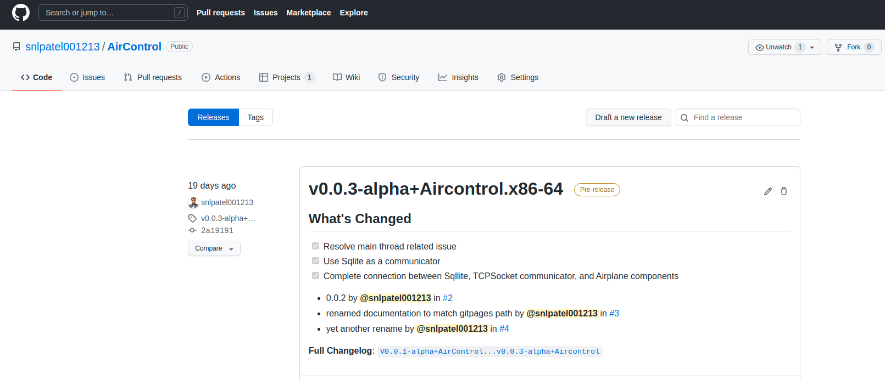

Working With Binaries¶
Working with binaries with Aircontrol is really-really easy. Here are few steps to download and get started with the binaries:
Go to the Release Page  Link : https://github.com/snlpatel001213/AirControl/releases
Aircontrol releasesd are avaialble for Linux Windows and Mac. Download one according to your OS.
Start Aircontrol with executable you just downloaded
Starting with Python API¶
Clone Aircontrol Repository Github
https://github.com/snlpatel001213/AirControl.gitGo to Aircontrol_20/Assets/Python
cd Aircontrol/PythonInstall Aircontrol python package
path/to/python setup.py installGet started with python notebooks
cd Aircontrol/Python/client_examples